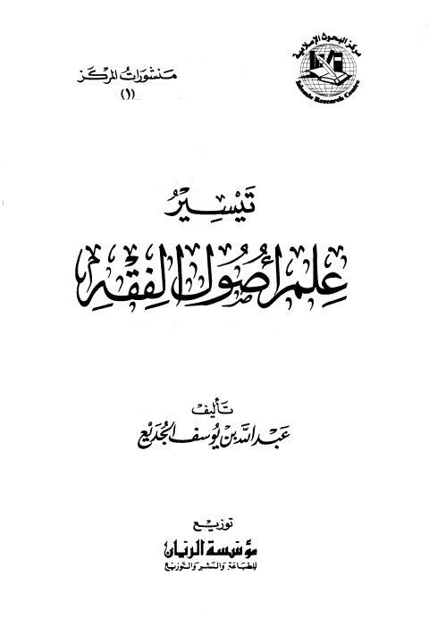
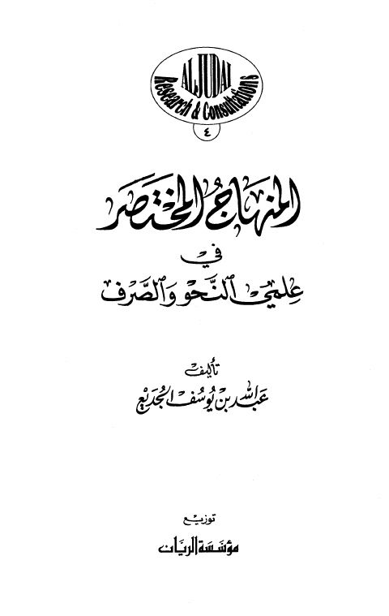
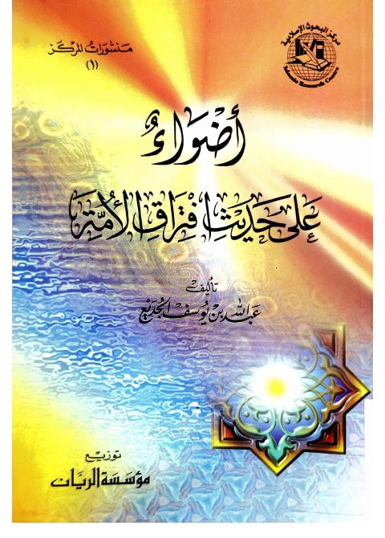
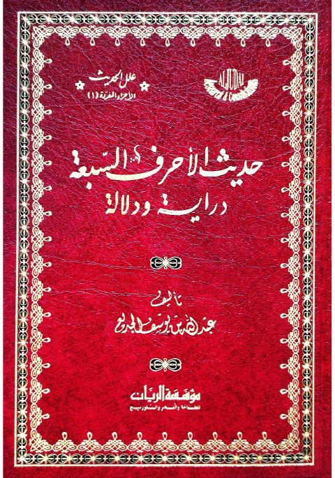
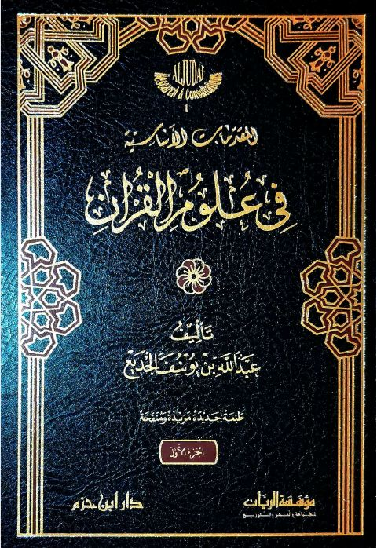

عبد الله بن يوسف الجديع
Author
Resources

تيسير علم أصول الفقه تيسير علم أصول الفقه عبد الله بن يوسف الجديع
المنهاج المختصر في علمي النحو والصرف المنهاج المختصر في علمي النحو والصرف عبد الله بن يوسف الجديع
أضواء على حديث افتراق الأمة أضواء على حديث افتراق الأمة عبد الله بن يوسف الجديع التجديد في تفسير القرآن
التجديد في تفسير القرآن
عبد الله بن يوسف الجديع
التجديد في تفسير القرآن
التجديد في تفسير القرآن
عبد الله بن يوسف الجديع

حديث الأحرف السبعة دراية ودلالة حديث الأحرف السبعة دراية ودلالة عبد الله بن يوسف الجديع
المقدمات الأساسية في علوم القرآن المقدمات الأساسية في علوم القرآن عبد الله بن يوسف الجديع